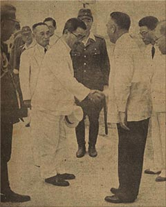

|
j
a v a s c r i p t |
May 11, 1943

Vargas greets Aoki at airport
Tribune: "P.I. Fulfilling Terms for Independence, Aoki" — the Minister of Greater East Asia is in town. So let's see: Tojo says, "If you" [fulfill the terms]; the Scribe says, "You're not doing it"; Aoki says, "You are"; the Director General is telling us to do it; and what's Tanaka saying? As a matter of fact, where's Tanaka? He didn't greet Tojo or Aoki and didn't attend any of the parades. People are saying he was shot on one of his inspection trips to the south. |